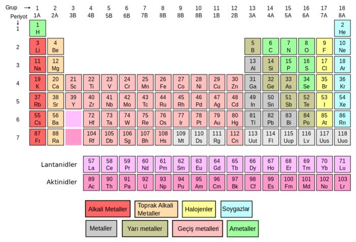

ELEMENT NEDİR?
Element, kimyasal yöntemlerle kendisinden daha basit yapıda maddelere ayrıştırılamayan saf maddelere denilmektedir. Elementlerin en küçük yapı taşı da atomdur. Kimyanın en önemli konularından biri olan elementler doğada yaklaşık olarak 117 çeşit bulunmaktadır. Üzerinde yıllarca bilimsel çalışmalar yapılmıştır. Elementlerin kendine özgü özellikleri ve sembolleri vardır. Bu sembollerle beraber periyodik tabloda sıralanmışlardır.
ELEMENTLERİN ÖZELLİKLERİ
- Elementlerin her birinin kendine özgü bir sembolü bulunur.
- Elementlerin donma ve erime ve yoğunlaşma dereceleri bulunur.
- Kendi özelliklerini taşıyan en küçük yapı taşına atom ismi verilir.
- Elementlerin her biri aynı cins atomdan meydana gelir.
- Elementlerin hepsi homojendir.
- Bazı elementler fiziksel özelliğine bağlı olarak yanma özelliği de gösterir.
- Elementler kimyasal özellikleri ile beraber, soygaz ya da ametal ve metal olarak ayrılır.
- Elementlerin her biri saf maddeden meydana gelmiştir.
ELEMENTLERİN SEMBOLLERİ
Her elementin kendine özgü sembolleri olduğundan bahsetmiştik. Bu sembollere göre periyodik tabloda sıralanmaktadırlar. Kimyasal formüllerde sembolleri ile kullanılmaktadırlar. En çok kullanılan elementlerin sembolleri şu şekilde:
- Magnezyum = Mg
- Kükürt = S
- Fosfor = P
- Klor = Cl
- Potasyum = K
- Kalsiyum = Ca
- Titanyum = Ti
- Krom = Cr
- Demir = Fe
- Helyum = He
BAŞ GRUP ELEMENTLER
- 1A = Alkali Metaller = Li, Na, K, Rb, Cs, Fr
- 2A = Toprak Alkali Metalleri = Be, Mg, Ca, Sr, Ba, Ra
- 3A = Toprak Metalleri (Bor grubu) = B, Al, Ga, In,TI
- 4A = Karbon grubu = C, Si, Ge, Sn, Pb, FI
- 5A = Azot grubu = N, P, As, Sb, Bi, Uup
- 6A = Kalkojenler (Oksijen grubu) =O, S, Se, Te, Po, Lv
- 7A = Halojenler = F, CI, Br, I, At, Uus
- 8A = Soy gazlar = He, Ne, Ar, Kr, Xe, Rn, Uuo
Periyodik tablo elementler şekildedir:
AMETALLERİN ÖZELLİKLERİ
- Isı ve elektriği iletmezler. (Fulleren ve grafit hariç)(fiziksel)
- Yüzeyleri mattır. (fiziksel)
- Kırılgandırlar, tel ve levha haline dönüştürülemezler. (fiziksel)
- Bileşiklerinde hem pozitif hem de negatif değerlikte olabilirler. (kimyasal)
- Oda koşullarında katı,sıvı veya gaz hallerinde bulunabilirler. (fiziksel)
- Elektron almaya isteklidirler çünkü son yörüngelerinde 5,6,7 elektron barındırabilirler. (kimyasal)
METALLERİN ÖZELLİKLERİ
- Tel ve levha haline getirilebilirler.
- Cıva dışındaki tüm metaller oda sıcaklığında katıdır.
- Işığı yansıtma özellikleri vardır.
- Isı ve elektriği iletirler.
- Nispeten yoğunlukları fazladır.
- Vurulduklarında metal tınılı ses çıkarırlar.


Sitemizin tüm hakları Çiçek Şirketlerin'e aittir.